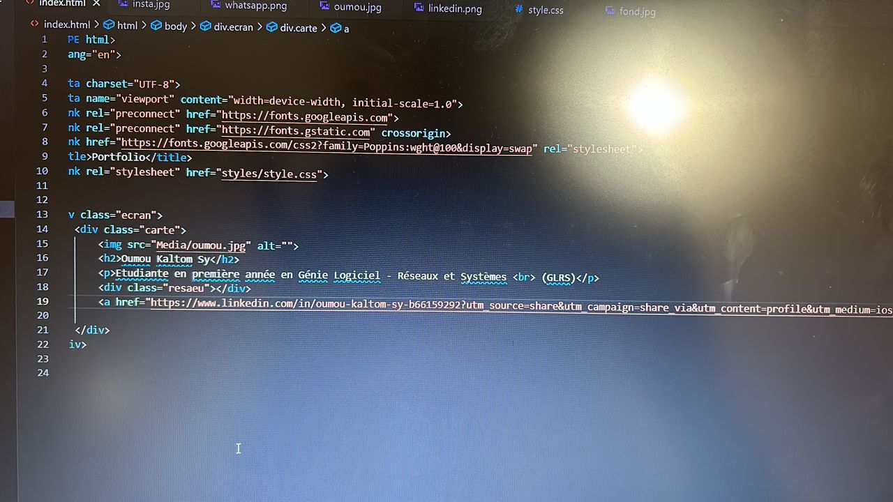
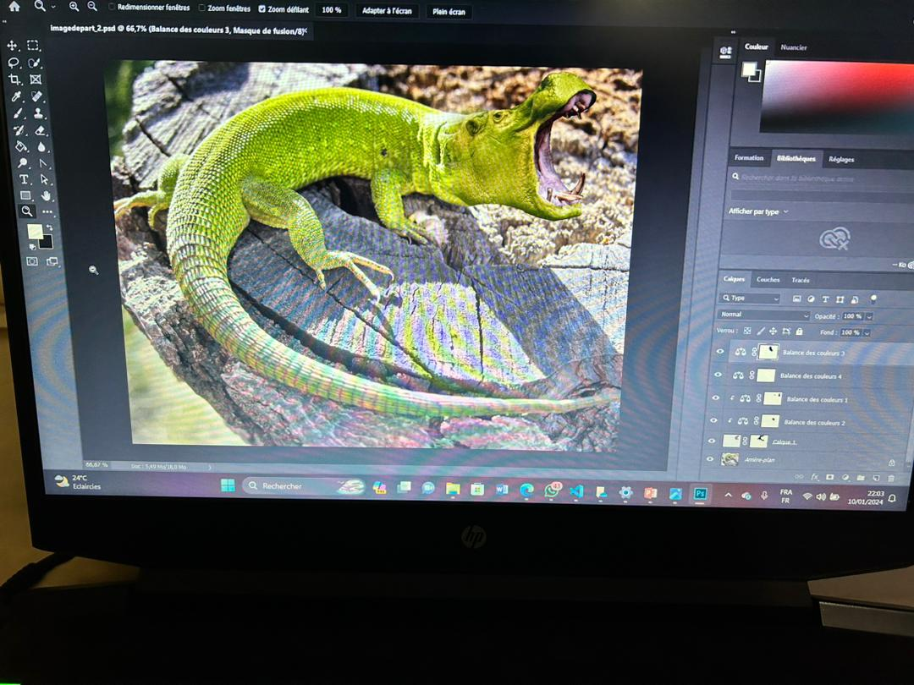
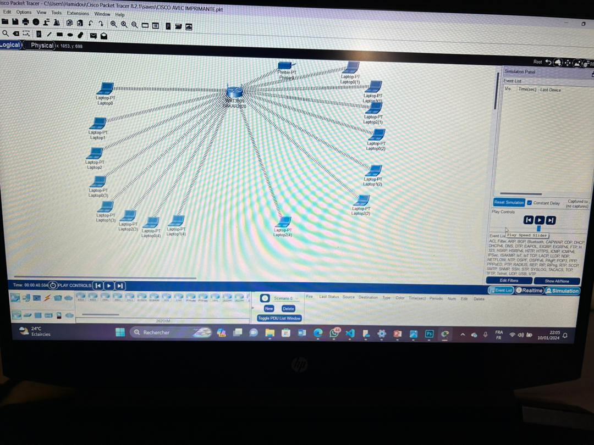

Voici quelques uns de mes travaux que j'ai pu réaliser en dehors de ceux fait en classe :
Ceci est une présentation powerpoint que j'ai eu à faire pour un projet sur le module intitulé fodamentaux du management. C'était un travail de groupe très passionnant dont le sujet portait sur le benchmark sur deux métiers de demain.
Ce code a été conçu dans le but de pouvoir s'exercer et mettre en avant les cours reçu en classe afin de pouvoir continuer à apprendre de moi-même et de ne pas oublier ce que j'ai acquis.
Ce travail a été conçu par un de nos enseignans dans le but de nous apprendre à être créatif. Nous avons associé la tête d'un hyppopotame avec le corps d'un lézard pour povoir avoir le résultat suivant.
J'ai eu à paramétrer différents éléments ici. En effet, ce travail présente la configuraton d'un réseau. J'ai eu à connecter les ordinateurs à une switch et par la suite, des ajustements ont été faits afin que les imprimantes et les PC puissent travailler ensemble.